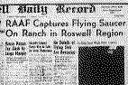

Tuesday, July 8, 1947

No Details of Flying Disk Are Revealed
Roswell Hardware Man and Wife Report Disk Seen
The intelligence office of the 509th Bombardment group at Roswell Army Field announced at noon today, that the field has come into possession of a flying saucer.
According to information released by the department, over authority of Maj.J. A. Marcel, intelligence officer, the disk was recovered on a ranch in the Roswell vicinity, after an unidentified rancher had notified Sheriff Geo. Wilcox, here, that he had found the instrument on his premises.
Major Marcel and a detail from his department went to the ranch and recovered the disk, it was stated.
After the intelligence officer here had inspected the instrument it was flown to higher headquarters.
The intelligence office stated that no details of the saucer's construction or its appearance had been revealed.
Mr. and Mrs. Dan Wilmot apparently were the only persons in Roswell who seen what they thought was a flying disk.
They were sitting on their porch at 105 South Penn. last Wednesday night at about ten o'clock when a large glowing object zoomed out of the sky from the southeast, going in a northwesterly direction at a high rate of speed.
Wilmot called Mrs. Wilmot's attention to it and both ran down into the yard to watch. It was in sight less then a minute, perhaps 40 or 50 seconds, Wilmot estimated.
Wilmot said that it appeared to him to be about 1,500 feet high and going fast. He estimated between 400 and 500 miles per hour.
In appearance it looked oval in shape like two inverted saucers, faced mouth to mouth, or like two old type washbowls placed, together in the same fashion. The entire body glowed as though light were showing through from inside, though not like it would inside, though not like it would be if a light were merely underneath.
From where he stood Wilmot said that the object looked to be about 5 feet in size, and making allowance for the distance it was from town he figured that it must have been 15 to 20 feet in diameter, though this was just a guess.
Wilmot said that he heard no sound but that Mrs. Wilmot said she heard a swishing sound for a very short time.
The object came into view from the southeast and disappeared over the treetops in the general vicinity of six mile hill.
Wilmot, who is one of the most respected and reliable citizens in town, kept the story to himself hoping that someone else would come out and tell about having seen one, but finally today decided that he would go ahead and tell about it. The announcement that the RAAF was in possession of one came only a few minutes after he decided to release the details of what he had seen.